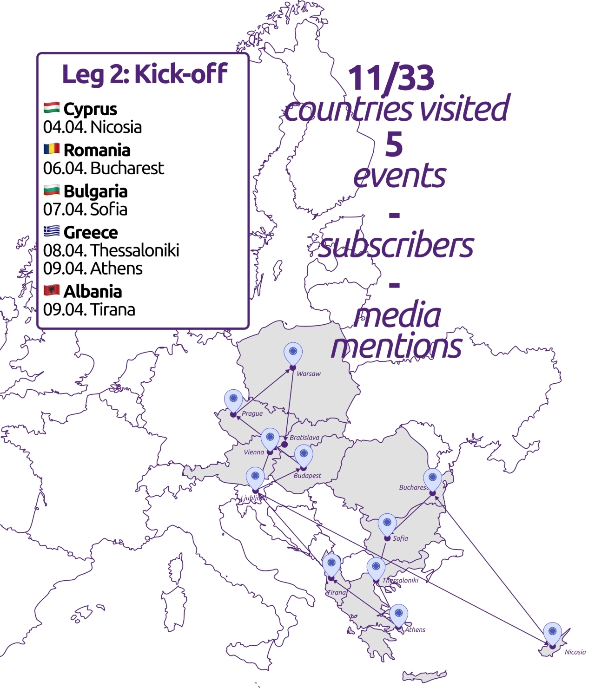
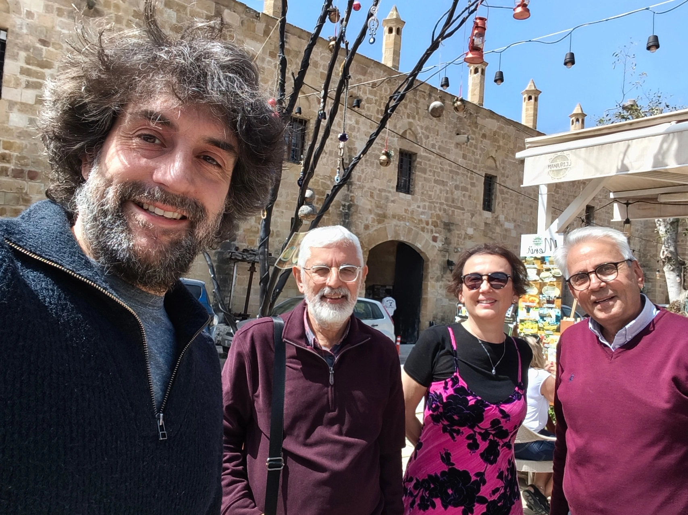
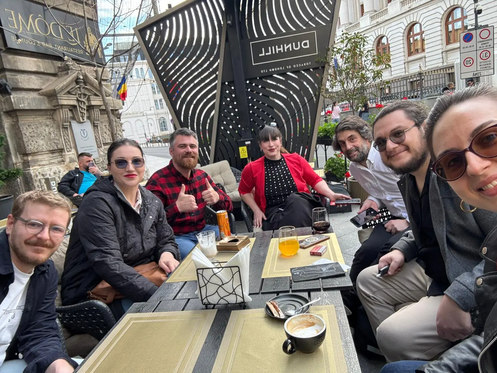
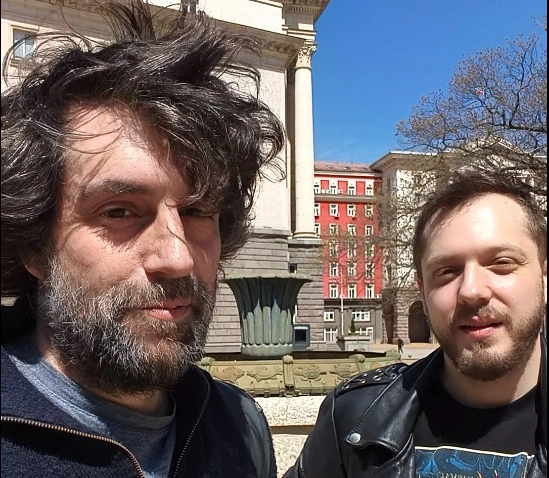
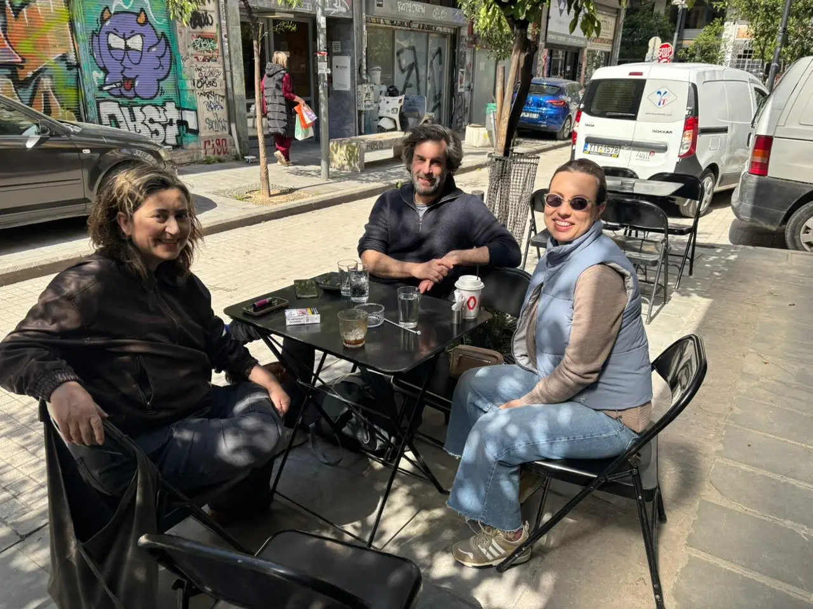
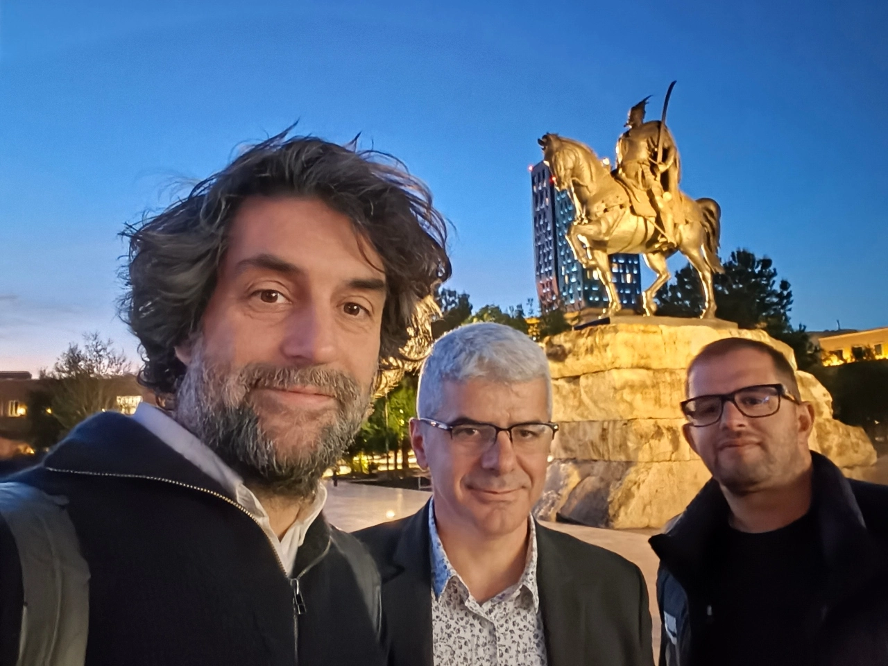

Eine transnationale Kampagne: Kickoff (#2)

Es ist der 5. Mai und die offizielle Kampagne hat begonnen. In diesem Newsletter werde ich über meine transnationale Listening-Tour schreiben, über die politische Situation in den Ländern und Städten, die ich besuche, darüber, wie es Volt Europa geht, und wie es ist, durch den Kontinent zu reisen.
Geschichten von der transnationalen Tour: Auftakt

Nicosia, Cyprus 🇨🇾

Nach einer Busfahrt um 2 Uhr morgens nach Venedig und anschließendem Flug landete ich verschlafen auf Zypern – mitten im Wahlkampf. Volt Zypern hat derzeit einen Sitz im Parlament (Alexandra Attalides, die von den Grünen zu uns gewechselt ist) und führt nun Kampagne, um selbst mit Volt ins Parlament einzuziehen. Es gibt 52 Kandidierenden, und da die Wähler sowohl eine Partei als auch ihre bevorzugte Person wählen, führen alle 52 einen eigenen Kampagnen (aktuell ist Volt bei 5 % und damit über der 3,6 %-Hürde!).
Erster Stopp meines Besuchs: die Grenze in die besetzte Zone überqueren. Passkontrolle und Checkpoint Charlie Vibes, da Nicosia in zwei Teile geteilt ist und die ehemalige Einkaufsstraße als militärische Pufferzone verfällt. Die Menschen sind im Geiste längst wiedervereint, und es war großartig, Volter auf beiden Seiten der Grenze zu treffen und zu sehen, wie stark die Verbindung in der Bevölkerung ist. Eine ganz andere Art des Wahlkampfs als zum Beispiel in Frankreich. Im Anschluß machten wir noch eine kleine Geschichts-Tour in die besetzte Pufferzone, bevor wir uns vor dem Regen in Sicherheit bringen mussten.
Rodoula Demetriades, eines der aktuellen Board Mitgliederhttps://svenfranck.eu/en/projects/campaign.html, hat der Tageszeitung vorgeschlagen, über Volt Europa und meine Kampagne zu berichten. Daher haben wir einigen Regen überbrückt, Interviewfragen zu beantworten. Ein gutes Beispiel dafür, wie ein politisch aktives Volt Europa nationalen Chapters Sichtbarkeit geben und unsere europäische Perspektive unterstrichen kann. Gerade in einem Land, das geografisch weit vom Rest Europas entfernt ist, ist es extrem wichtig, diese ideele Verbindung herzustellen und sich dafür einzusetzen, dass Zypern besser an Europa angebunden wird – geht ja schlecht mit einem Hochgeschwindigkeitszugnetz...
Ich bin mit vielen Ideen Richtung Rumänien abgereist und möchte mich noch einmal beim gesamten Team von Volt Zypern bedanken, das sich so gut um mich gekümmert hat. 💜
Bucharest, Romania 🇷🇴

Ich hatte nur einen langen Nachmittag in Bukarest, bevor es mit dem Nachtbus nach Sofia weiterging. Nachdem ich bei der Passkontrolle fast ins Kreuzverhör genommen wurde – mein Ausweisfoto von 2017 zeigte deutlich kürzere und weniger graue Haare als mein Ich von 2026 – konnte ich schließlich einreisen und mich mit dem Team von Bukarest treffen.
Der Abend war bereits geplant, also schloss ich mich einer Buchpräsentation von Sandu Cuturela über Sicherheit in einem sich wandelnden geopolitischen Kontext an. Dank Ana Măiță, die für mich spontan übersetzte, konnte ich dem Panel gut folgen. Einige Kontakte aus meinem Netzwerk sind auch gekommen und ich konnte sie Volt Rumänien vorstellen, um hoffentlich ihre Liste an Beraterinnen und Beratern zu verschiedenen politischen Themen zu erweitern.
Wir ließen den Abend bei rumänischer Küche ausklingen und diskutierten die Rolle von Volt Rumänien und anderen mitteleuropäischen Ländern innerhalb von Volt Europa sowie die unterschiedlichen politischen Verhältnisse auf beiden Seiten des ehemaligen Eisernen Vorhangs. In einigen Ländern ist Volt liberal, in anderen grün, in wieder anderen sozialdemokratisch – und in manchen Ländern sind wir auch stark zentristisch. Die politischen Rahmenbedingungen unterscheiden sich von Mitgliedstaat zu Mitgliedstaat, und ein gemeinsamer Ansatz und eine gemeinsame politische Richtung erfordert Neutralität im EUR Board und den Willen für Konsens - eine zentrale Aufgabe unserer europäischen Führung.
Unnötig zu sagen, dass sich das Team vor Ort großartig um mich gekümmert hat – und mich quasi bis zum Busbahnhof Richtung Sofia verabschiedet hat.
Sofia, Bulgaria 🇧🇬

Das war eine harte Tour – an Schlaf war kaum zu denken. Als ich um 5 Uhr morgens in Sofia ankam, buchte ein Hotel um wenigstens ein paar Stunden zu schlafen. Die waren auch nötig, bis Simeon, Co-Präsident von Volt Bulgarien, mich um 10 Uhr abholte.
Wir frühstückten typisch bulgarisch (Princesa – nicht „Prinzessin“) und sprachen über Volt in Bulgarien. Ähnlich wie in Rumänien ist das politische Klima hier deutlich zentristischer als in anderen Mitgliedstaaten, sodass die Standardpositionen von Volt hier viele Wählerinnen und Wähler nicht wirklich überzeugen. Außerdem waren es nur zwei Wochen bis zu den Parlamentswahlen, und Volt Bulgarien trat in einer Koalition mit einer NGO für Verkehrssicherheit an – nach meiner Busfahrt konnte ich mich damit sofort identifizieren. Am Ende erreichten sie 2,9 % und verfehlten damit knapp die 4 %-Hürde und den Einzug ins Parlament, erzielten aber dennoch ein super Ergebnis.
Bulgarien ist im letzten Jahr endlich dem Schengen-Raum beigetreten, nachdem Österreich seine Blockade aufgegeben hatte, und das Land hat im Januar auch den Euro eingeführt. Die Europäische Union ist nicht überall beliebt, aber das Land macht Fortschritte, um zu anderen EU-Mitgliedstaaten aufzuschließen. Ich habe mehr über den Konflikt zwischen Volt Bulgarien und Volt Europa erfahren und war froh, die Gelegenheit zu haben, direkt mit Mitgliedern eines unserer lokalen Chapters zu sprechen, das bisher nie wirklich seinen Weg in unser europäisches Netzwerk gefunden hat. Zeit, das zu ändern.
Nachdem ich schon eine holprige Fahrt nach Bulgarien hinter mir hatte, folgte die nächste – nach Thessaloniki in Griechenland.
Thessaloniki und Athens, Greece 🇬🇷

Dieses Mal kam ich vor Mitternacht an, und Christos vom lokalen Team holte mich sogar ab und brachte mich in sein Büro, wo ich auf dem Sofa schlafen konnte. Endlich eine Nacht durchschlafen...
Am Morgen gab es Kaffee an der Strandpromenade und eine lange Diskussion über bedingungsloses Grundeinkommen. Dabei erfuhr ich auch mehr über die multikulturelle Geschichte von Thessaloniki als Schmelztiegel und kulturelles Zentrum, das nach einer Phase des Nationalismus langsam wieder zu dieser Rolle zurückfindet. Zum Mittagessen trafen wir uns mit dem lokalen Team, um über Politik und die Schwierigkeiten zu sprechen, in Griechenland in Wahlen anzutreten – zum Beispiel werden in Frankreich allen Parteien Medienzeiten zugewiesen, während man sich in Griechenland Sichtbarkeit in den Medien mit Bestechung erkaufen muss.
Wir tauschten uns über unterschiedliche Perspektiven zu Europa aus, bevor ich zum Bahnhof aufbrach und weiter Richtung Athen fuhr. Die Landschaft war viel grüner, als erwartet, und da es praktisch kein mobiles Internet gab, konnte ich nicht wirklich arbeiten – also genoss ich einfach die Aussicht. Ich kam spät in Athen an und wurde von Odysseas abgeholt, mit dem ich dann noch viel zu lange auf der Terasse diskutierte. Am nächsten Morgen trafen wir das Team aus Athen in einer lokalen Buchhandlung. Electra, die ebenfalls für den Vorstand kandidiert, war auch in Athen, sodass wir natürlich über die bevorstehenden Wahlen und die politische Lage in Griechenland sprachen.
Ich konnte nicht zu lange bleiben, da mein Flug nach Tirana bereits am frühen Nachmittag flog. Am Ende mehr oder weniger im Sprint zum Airport, um meine Reise nach Albanien fortzusetzen.
Tirana, Albania 🇦🇱

Es war mein zweiter Besuch in Tirana nach unserer General Assembly vor einigen Jahren. In Albanien arbeitet Volt mit Nisma Thurje zusammen, die perspektivisch in Volt Albanien aufgehen werden. Ich wurde von deren Team empfangen, und wir verbrachten einen Abend damit, über Politik in Albanien zu sprechen, über die Bedeutung von Parteimitgliedern mit Erfahrung im politischen Apparat sowie über die bisherigen Aktivitäten von Nisma – zum Beispiel, Strände wieder öffentlich zugänglich zu machen, während sich das Land in Richtung Europäische Union bewegt. Ein weiteres Projekt, das mit der aktuellen Regierung eher festzustecken scheint.
Wir diskutierten, welchen großen Unterschied ein schrittweiser EU-Beitritt für die Bevölkerung machen würde – etwa indem albanischen Bürgerinnen und Bürgern bereits Zugang zu EU Schaltern bei der Einreise gewährt wird oder eine bessere Zuganbindung. Kleine Dinge mit potenziell großer Wirkung.
Natürlich ließen wir den Abend bei lokaler Küche ausklingen, und nachdem ich mich einmal durch das Menü gegessen habe, verbrachte ich eine schlaflose Nacht im Flughafenhotel, bevor es am frühen Morgen zurück nach Ljubljana ging.
Damit endete meine Tour durch Mittel- und Osteuropa, voller Ideen und Eindrücke und beeindruckt von der Gastfreundschaft in allen Ländern. Volt hat auch hier seinen Platz im politischen Spektrum. Es ist an uns und unserem Europäischen Board, den Chapters Rückenwind zu geben, damit wir auch in diesen Ländern Fuß fassen.
Lila Grüße,
Sven